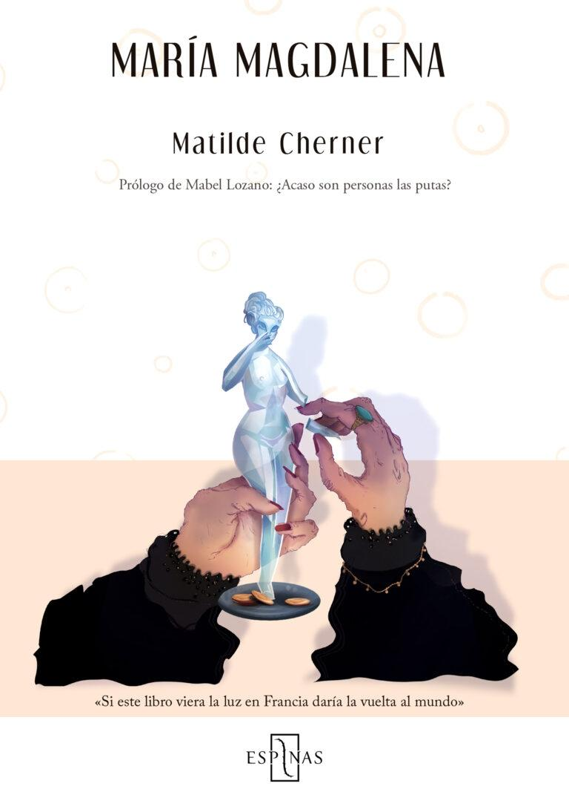

Matilde Cherner
Bajo el seudónimo masculino Rafael Luna, Matilde Cherner publicó "María Magdalena" en 1880, considerada la primera novela española que aborda la prostitución desde una perspectiva crítica y abolicionista. La obra fue silenciada en su época debido a su temática transgresora y al hecho de ser escrita por una mujer.
